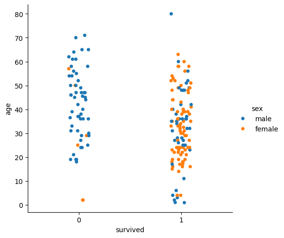
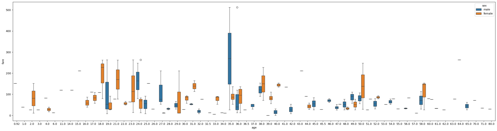
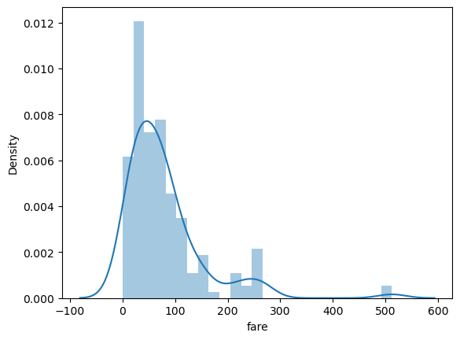
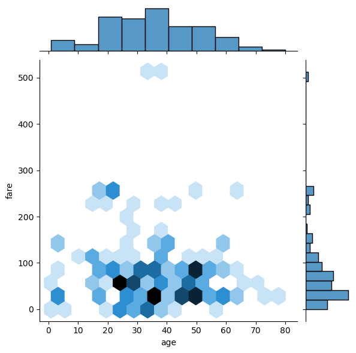
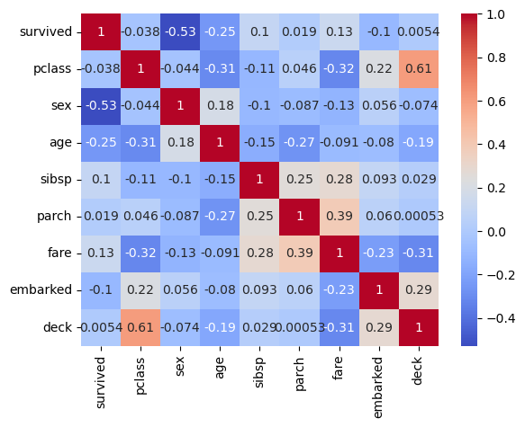

Chapitre 6 : Visualisation de Données avec Seaborn
Seaborn est une bibliothèque de visualisation de données puissante et facile à utiliser, qui s'appuie sur Matplotlib. Elle permet de créer des graphiques élégants et informatifs, adaptés à l'exploration et à l'analyse de données.
Objectifs du chapitre
À la fin de ce chapitre, vous serez capable de :
- Utiliser Seaborn pour créer des graphiques informatifs et esthétiques.
- Explorer les relations entre différentes caractéristiques grâce à des visualisations avancées.
- Analyser les distributions et corrélations dans vos jeux de données.
Sommaire :
- Chapitre 1 : Pairplot() - La vue d'ensemble
- Chapitire 2 : Visualiser de catégories
- Chapitre 3 : Visualisation de Distributions
import numpy as np
import matplotlib.pyplot as plt
import pandas as pd
import seaborn as sns
iris = sns.load_dataset('iris')
iris.head()
-
sepal_length sepal_width petal_length petal_width species
0 5.1 3.5 1.4 0.2 setosa
1 4.9 3.0 1.4 0.2 setosa
2 4.7 3.2 1.3 0.2 setosa
3 4.6 3.1 1.5 0.2 setosa
4 5.0 3.6 1.4 0.2 setosa
1. Pairplot() : La vue d'ensemble
sns.pairplot(iris, hue='species')

2. Visualiser de catégories
titanic = sns.load_dataset('titanic')
titanic.drop(['alone', 'alive', 'who', 'adult_male', 'embark_town', 'class'], axis=1, inplace=True)
titanic.dropna(axis=0, inplace=True)
titanic.head()
-
survived pclass sex age sibsp parch fare embarked deck
1 1 1 female 38.0 1 0 71.2833 C C
3 1 1 female 35.0 1 0 53.1000 S C
6 0 1 male 54.0 0 0 51.8625 S E
10 1 3 female 4.0 1 1 16.7000 S G
11 1 1 female 58.0 0 0 26.5500 S C
sns.catplot(x='survived', y='age', data=titanic, hue='sex')

plt.figure(figsize=(32, 8))
sns.boxplot(x='age', y='fare', data=titanic, hue='sex')

3. Visualisation de Distributions
sns.distplot(titanic['fare'])

sns.jointplot(x='age', y='fare', data=titanic, kind='hex')

# Conversion des colonnes non numériques (object ou category)
for col in titanic.columns:
if titanic[col].dtype == 'object' or titanic[col].dtype.name == 'category':
if titanic[col].nunique() == 2:
# Colonnes binaires
titanic[col] = titanic[col].map({titanic[col].unique()[0]: 0, titanic[col].unique()[1]: 1})
else:
# Colonnes avec plusieurs catégories
titanic[col] = titanic[col].cat.codes if titanic[col].dtype.name == 'category' else pd.factorize(titanic[col])[0]
# Vérification : Toutes les colonnes doivent maintenant être numériques
print(titanic.dtypes)
# Calcul des corrélations et affichage de la heatmap
corr = titanic.corr()
sns.heatmap(corr, annot=True, cmap='coolwarm')
plt.show()
-
survived int64
pclass int64
sex int64
age float64
sibsp int64
parch int64
fare float64
embarked int64
deck int8
dtype: object
